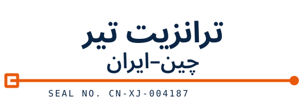

بار TIR کجا تحویل میشود: گمرک مقصد، نه درب انبار
سارخس و لطفآباد مرز ورودند، نه نقطه تحویل. تحویل با CPT یا DAP در گمرک مشهد یا گمرک غرب تهران انجام میشود و ترخیص با ترخیصکار خریدار است. تخلیه و جرثقیل بیرون از کرایه.

WhatsAppTIR TRUCK · CHINA → IRAN
چهار راهنما، هر کدام برای یک پرسش که پیش از استعلام پیش میآید: بار کجا تحویل داده میشود، آیا پلمپ زمان را عوض میکند، یک تریلی چطور بار چند فروشنده را میبرد، و کامیون TIR در اصل چیست. راهنمای مربوط به پرسش خود را بخوانید و بعد مشخصات کالا را بفرستید.
سارخس و لطفآباد مرز ورودند، نه نقطه تحویل. تحویل با CPT یا DAP در گمرک مشهد یا گمرک غرب تهران انجام میشود و ترخیص با ترخیصکار خریدار است. تخلیه و جرثقیل بیرون از کرایه.
یک پلمپ در انبار چین و یک کارنه. باز شدن بار کمتر است، نه صفر: تریلی مستقیم هم یکبار در بخارا تعویض میشود. جدول روزها همان جدول فعلی ووچیا میماند و کرایه دوباره قیمت نمیگیرد.
بار هر فروشنده در انبار چین جدا شمرده میشود، بعد یک پلمپ روی کل خودرو میخورد. هر دو سقف روی جمع بار اعمال میشود: ۸۰ مترمکعب و ۲۲ تن برای هر خودرو.
یک روش اجرای حمل است، نه مدرکی روی دیوار: پلمپ در مبدأ، یک کارنه، تعویض کامیون کمتر، بدون تغییر در زمان حمل و کرایه.
این راهنماها نحوه کار سرویس را توضیح میدهند؛ جای استعلام را نمیگیرند و هیچ کرایهای در آنها نیست. کرایه رسمی با ایمیل و همراه با تاریخ اعتبار اعلام میشود و سه چیز لازم دارد: انبار مبدأ (ایوو، شنژن، گوانگجو یا شانگهای)، گمرک مقصد (مشهد یا غرب تهران)، و مشخصات کالا شامل نام، کد HS، وزن ناخالص به کیلوگرم و حجم به مترمکعب.
روزهای همه این صفحهها از مرز ووچیا شمرده میشود و بازه شرایط فعلی است، نه تعهد. مسیر خورگوس مورد به مورد تأیید میشود و زمان ثابت منتشرشده ندارد. خروج از چین فقط ووچیا یا خورگوس است.
اگر پاسخ پرسش شما اینجا نیست، همان را در استعلام بنویسید. برای ماشینآلات ابعاد و برای مواد شیمیایی برگه MSDS را با اولین پیام بفرستید تا پاسخ سریعتر برگردد.